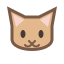

饭碗
吃饭是一点小仪式。

想说点什么就点我。没想好，也可以只让我趴在这里。
吃饭是一点小仪式。
清清爽爽地陪着你。
关掉喂食或铲屎后，数值会暂停。离开时也不会偷偷变差，我对你的喜欢一直都在。
先选一个城市，我再帮你看看。
天气来自 Open-Meteo。只使用你选择的城市。
我的待办清单只有两条：陪你。陪你做别的。
不必有多隆重。戴上耳机，听一会儿就好。
平台按钮是搜索入口；请在结果中确认艺人、专辑与版本。评分是媒体原始乐评，推荐语为本应用整理。
专辑推荐已暂停。想听的时候，在设置里打开就好。
每个功能都可以独立暂停。全部关掉，我就安静地当一只桌面猫。
共享免费服务和自己的 API 都在「聊天与 API」里设置。
关掉后保留静态外观和聊天。
使用自己或 Codex 制作的外观包。
内置猫猫可以直接选。自定义外观只包含图片和动作描述，不需要运行外观作者的程序。
你忙、忘记喂饭，或者把照料功能关掉，都不会改变我对你的态度。没有好感扣分，也没有生病或死亡惩罚。
我会支持你。实在不会的事，也会温柔地告诉你。
可以使用共享免费服务，也可以接入自己的免费 API。先不设置也没关系。
免费服务受限时会提示，只有你主动选择自己的 API 才会调用它。自己的 API 也可以使用免费模型，费用与限额以服务商控制台为准。
下面是国内平台的官方入口。只选明确标为免费的文字聊天模型，免费政策和限额以当前控制台为准。
Key 只填进客户端设置。请不要把它放进外观包或发给别人。
「网页聊天免费」与「API 调用免费」是两件事。注册赠送的试用额度可能到期，接入前请确认模型的输入、输出都免费。